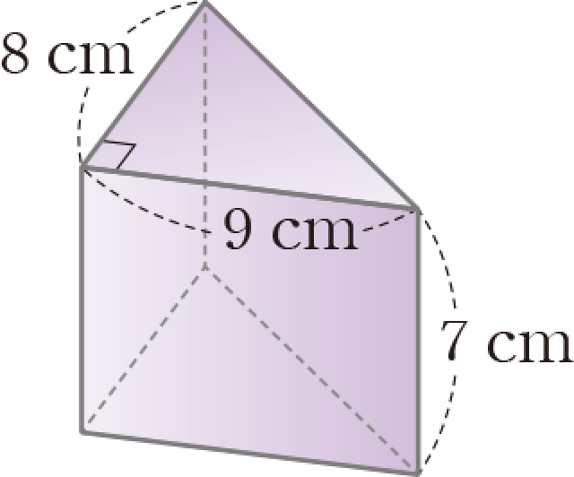
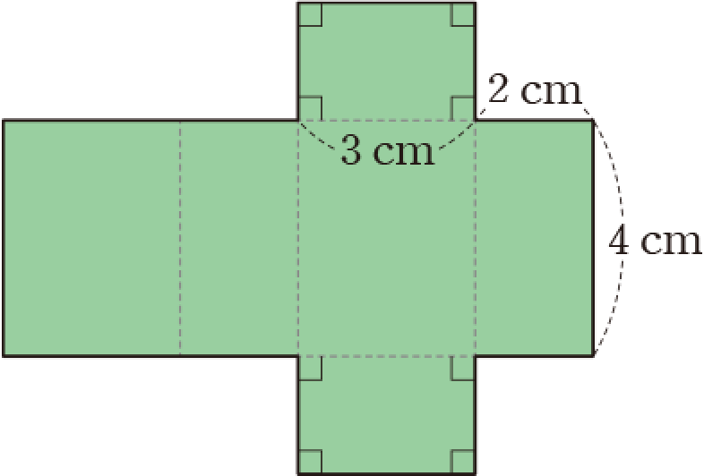
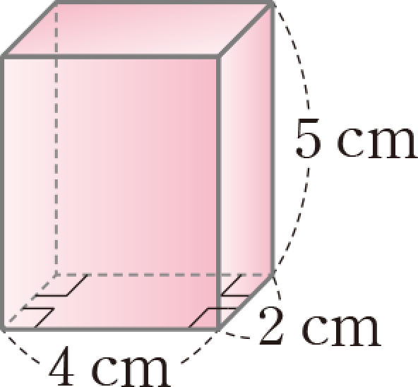
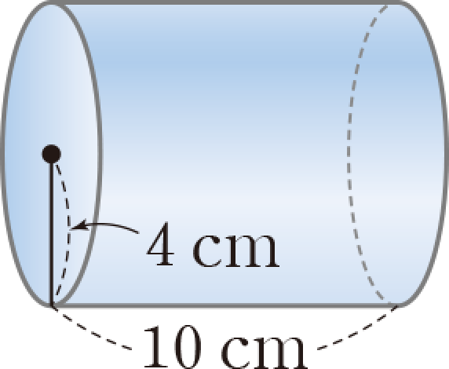

1
다음 2안에 들어갈 말을 쓴 것은?
(기둥의 겉넓이)=(밑넓이)_(
)+(옆넓이)
오답

(기둥의 겉넓이)=(밑넓이)_2+(옆넓이)
정답

(기둥의 겉넓이)=(밑넓이)_2+(옆넓이)
2
다음 각기둥의 밑넓이는?

오답
(밑넓이)=\[ \frac{1}{2}\]_8_9=36(cm2)
정답
(밑넓이)=\[ \frac{1}{2}\]_8_9=36(cm2)
3
다음 전개도로 만들어지는 입체도형의 옆넓이는?

오답
(옆넓이)=4_(2+3+2+3)=40(cm2)
정답
(옆넓이)=4_(2+3+2+3)=40(cm2)
4
다음 각기둥의 부피는?

오답
(부피)=4_2_5=40(cm2)
정답
(부피)=4_2_5=40(cm2)
5
다음 원기둥의 밑넓이는?

오답
(밑넓이)=\[ \pi\]_42=16\[ \pi\](cm2)
정답
(밑넓이)=\[ \pi\]_42=16\[ \pi\](cm2)